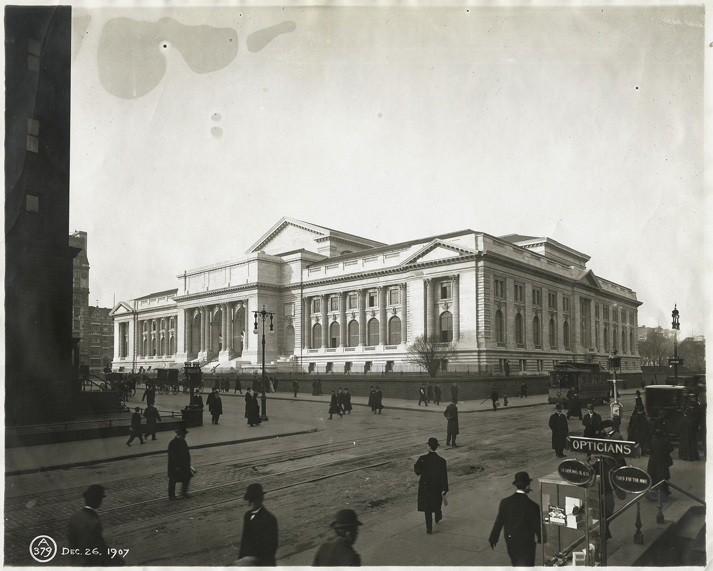
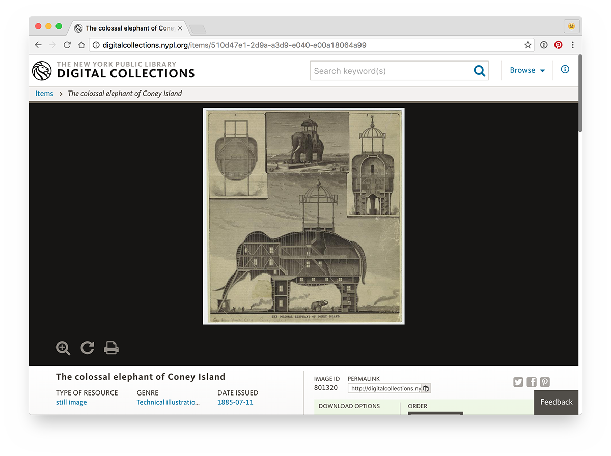
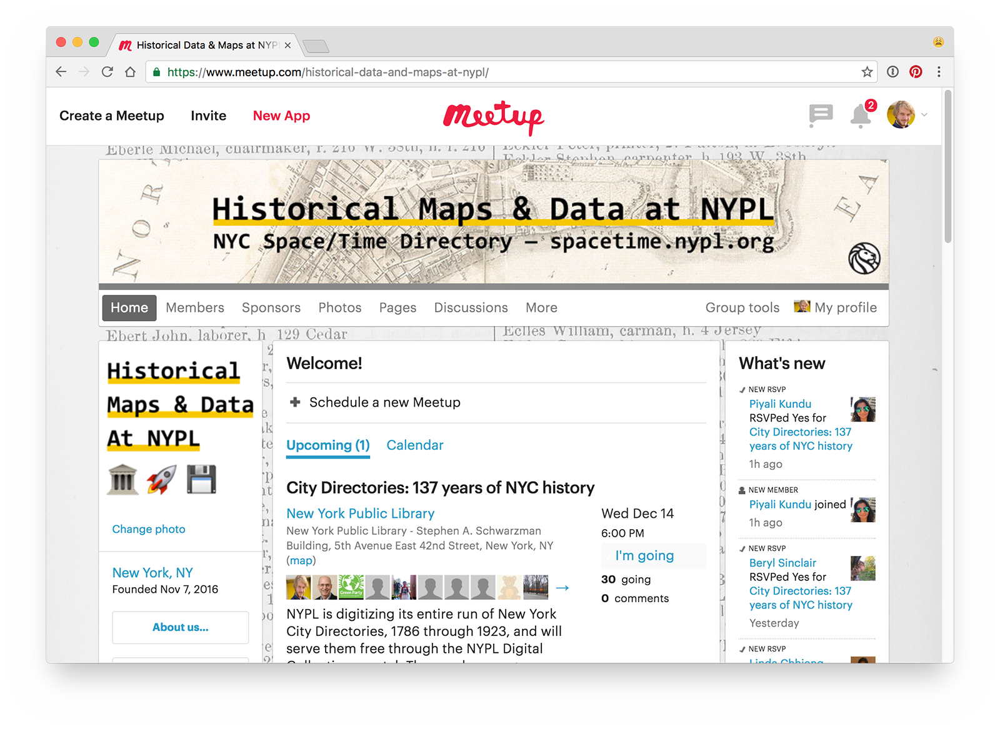

NYC Space/Time Directory - Stadsarchief Amsterdam
Ik ben Bert Spaan!

NYPL Labs
NYC Space/Time Directory: collecties van NYPL en geschiedenis van NYC, doorzoekbaar door ruimte en tijd
Voorbeeld 1: boerderijen in Brooklyn
Voorbeeld 2: bier
Voorbeeld 3: openbaar vervoer
Voorbeeld 4: auto's
Stap 1: de collectie van de bibliotheek!
Stap 2: digitaliseren!

Stap 3: gegevens ontsluiten!
Step 4: alles combineren!
NYC Space/Time Directory = open data + zoeken + geo + open source + digitaliseren + crowdsourcing + community
Hoofddoel: de collecties van de bibliotheek en de geschiedenis van New York toegankelijker maken, door ruimte en tijd
Alle historische geo-data van de NYPL, op één plek, in één formaat & open data
Step 5: open source + community!

Step 6: meer crowdsourcing!
Stap 7: nieuwe dingen maken!
Doorzoekbare historische adressen